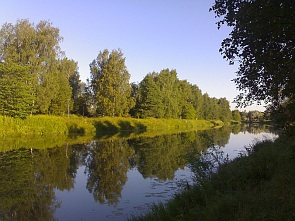
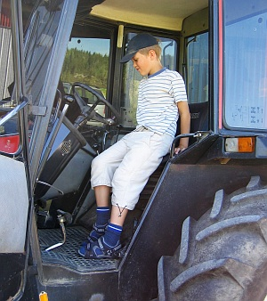
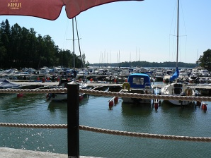
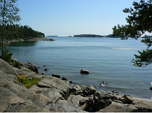
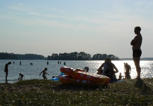

Elokuu 2007 |
Vielä on kesää jäljelläPekalla alkoivat työt taas elokuun alussa, mutta Mirjan ja Samin loma jatkui vielä koulujen alkuun asti. Elokuussa riiti vielä kauniita ilmoja nautittavaksi. Mirja ja Sami tekivät terassikierroksen, johon kuului mm. italialainen jäätelö Kaivopuistossa, neulamuikkuja Kauppatorilla sekä lastin keventäminen Kappelissa. Säät suosivat myös työmatkapyöräilyä. Kauniina ja lämpimänä kesäaamuna ei turhaa kiirettä huvittanut pitää. Välillä oli pysähdyttävä ihailemaan ja kuvaamaan kauniita joenrantamaisemia. Ukonilmat kuuluvat kesään. Olen havainnut, että täällä Heikinlaaksossa tietoliikenneyhteydet ovat jossakin määrin herkkiä vikaantumaan salamoiden takia. Taas käräytti ukkonen meiltä pari lähiverkkoliityntää. MaalaiselämääMirja ja Sami kävivät tutustumassa oikeaan maalaiselämään aidolla suomalaisella pientilalla Orimattilassa. Erja oli kutsunut heidät nimipäivien viettoon miesystävänsä kotitilalle. Uimisen lisäksi Sami sai kokeilla, minkälaista on olla traktorin kyydissä. Samalla reissulla oli käyty myös kotieläintilalla katsomassa hevosia, possuja, lehmiä ja porojakin. Lisäksi tutustuttiin Orimattilan Kehräämöön, jossa toimii useita pienyrityksiä ja käsityöpajoja. UutelaVuosaaren kupeessa sijaitsee Uutelan luonnonvarainen virkistysalue. Teimme sinne polkupyörillä retken. Päivän lounaan nautimme Cafeteria Kampelassa, joka sijaitsee Uutelan venesatamassa. Karttamme oli mittakaavaltaan vähän pieni ja sen seuraaminen muutenkin liikkeellä ollessa oli hankalaa. Polut olivat kapeita ja mutkaisia, eivätkä aina edes ajokelpoisia, Löysimme kuitenkin tiemme meren rantaan, jossa liottelimme jalkojmme. Vesi oli lämmintä, mutta virkistävää. Uutela-kierroksen jälkeen jatkoimme Aurinkorannan rantabulevardia pitkin mummille ja vaarille iltapäiväkahville. Rantabulevardi hiekkarantoineen oli aika upea ja tuli sellainen tunne kuin olisi ollut jossakin etelän lämpimässä lomaparatiisissa. Päivän päätteeksi ajoimme vielä Kallvikin kärkeen uimaan (siis Mirja ja Sami kävivät uimassa). Ja sitten tietysti vielä kotiin. Pitkästä reissusta huolimatta Sami selvisi matkasta suuremmitta mukinoitta. Vähän kyllä tuli sanomista menomatkalla iskän kartanlukutaidosta, kun jouduimme ajamaan puolisen kilometriä sepelipohjaista rakenteilla olevaa katua pitkin. |
Kuukauden sääElokuulle osui joitakin voimakkaita ukkosmyrskyjä. Viranomaiset jopa kehottivat ihmisiä pysymään sisätiloissa voimakkaan salamoinnin vuoksi. Sähköt olivat pääkaupunkiseudullakin tuhansilta kotitalouksilta poikki. Mutta oli elokuussa myös oikein kaunista ja lämmintäkin säätä. Kuukauden ajatusSavuke on kuivatuilla kasvinlehdillä täytetty paperikäärö, jonka toisessa päässä on hehkuva hiillos ja toisessa päässä idiotti. Paulo Coelho Kuukauden kuvaRanta Elokuun kuvia |